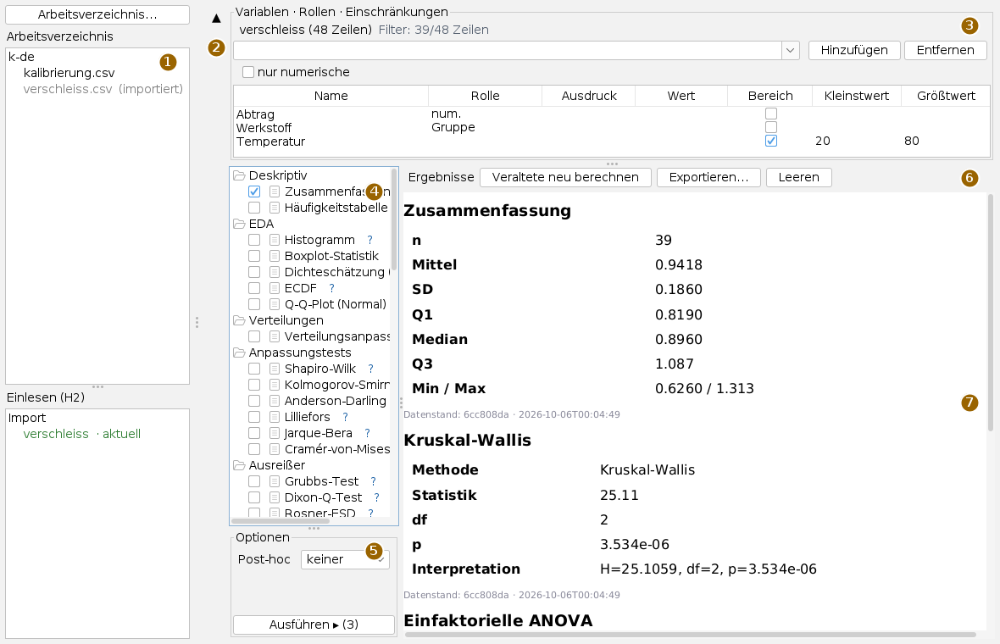
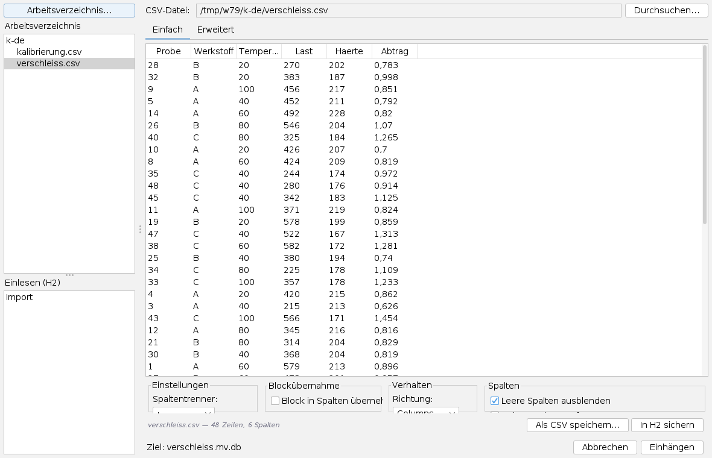
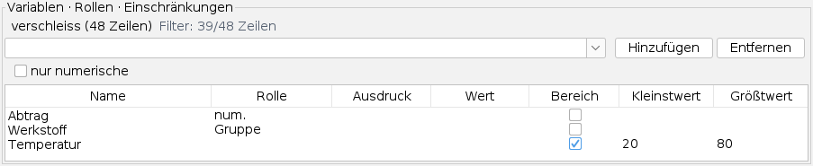
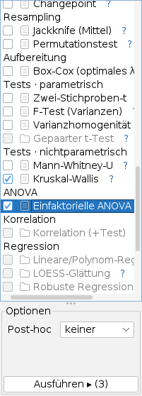
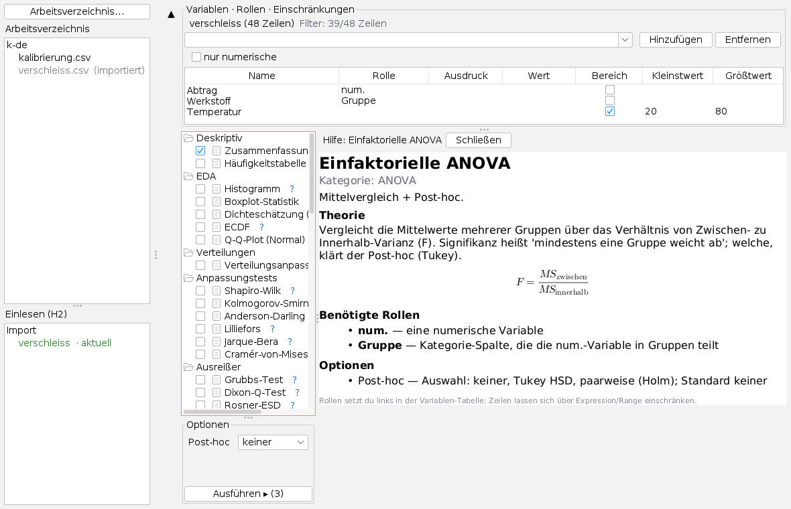
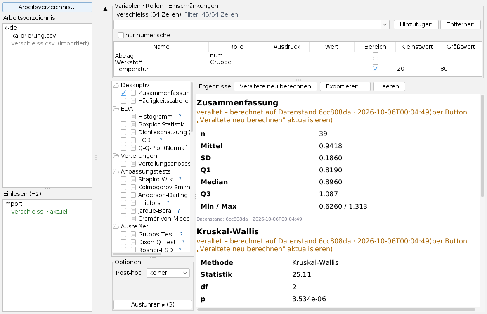

Die Statistik-Werkbank bedienen
Bedienseite, Stand 06.10.2026. Wie man ein Arbeitsverzeichnis wählt, eine CSV-Datei einliest, Spalten Rollen und Einschränkungen gibt, Methoden auswählt und ausführt und die Ergebnisse liest, aktualisiert und exportiert. Die Bilder sind Bildschirmfotos der App mit einer frei erfundenen Verschleißmessreihe.
Das Fenster
Die App öffnet man im Menü Anwendungen mit Statistik-Werkbank oder mit Alt+S.

Alle Trennlinien lassen sich verschieben. Der Statistikteil – Methodenbaum, Optionen und Ausführen – ist gesperrt, bis ein Datensatz geladen ist und eine Rolle wirkt; Gruppe wirkt nur zusammen mit num.
Eine Auswertung in sechs Schritten
- Links Arbeitsverzeichnis… drücken und einen Ordner wählen. Oben erscheinen seine CSV-Dateien, unten die schon eingelesenen Datensätze.
- Eine CSV-Datei anklicken. Ist sie noch nicht eingelesen, erscheint rechts das Ladefeld; Trennzeichen prüfen und Einhängen.
- Im Variablenbereich die benötigten Spalten hinzufügen und ihnen eine Rolle geben, etwa num. für die Messgröße und Gruppe für die Einteilung.
- Bei Bedarf Zeilen einschränken, zum Beispiel einen Temperaturbereich.
- Im Methodenbaum Methoden anhaken; eine angeklickte Methode zeigt ihre Optionen.
- Ausführen ▸ drücken. Jede Methode legt eine Karte in der Ergebnisliste an.
Arbeitsverzeichnis und Einlesen

Die App rechnet nicht auf der CSV selbst, sondern liest sie einmal in eine H2-Datenbankdatei daneben ein: aus verschleiss.csv wird verschleiss.mv.db. Je Lauf holt sie nur die Spalten und Zeilen, die gebraucht werden; so bleiben auch große Dateien bedienbar.
Das Ladefeld trennt die Spalten zunächst mit Komma. Bei einer Datei mit Semikolon steht die ganze Zeile in einer Spalte, und das Feld meldet, dass Zeilen mehr Felder haben als die erste; dann unter Einstellungen den Spaltentrenner auf ; stellen. Ein Dezimalkomma wird beim Einlesen in reinen Zahlenspalten zum Punkt; Datum und Versionsnummern bleiben Text. Einhängen wird frei, sobald die Vorschau Zeilen hat; Abbrechen führt ohne Einlesen zurück. Das Einlesen läuft im Hintergrund mit Wartehinweis.
Eine eingelesene CSV steht oben grau mit dem Zusatz (importiert); ein Klick darauf lädt den Datensatz gleich, ohne Ladefeld. Unten trägt jeder Datensatz eine Marke:
| Marke | Bedeutung |
|---|---|
| aktuell (grün) | Die CSV ist unverändert seit dem Einlesen (gleiche Prüfsumme). |
| veraltet – neu importieren (orange) | Die CSV hat sich geändert. Die CSV oben anklicken und erneut einhängen. |
| keine Quelle | Die CSV fehlt; der Datensatz lässt sich trotzdem laden. |
| extern | Eine Datenbank ohne Vermerk, woher sie stammt. |
H2-Dateien anderer Apps im selben Ordner zeigt der Navigator nicht an.
Rollen und Einschränkungen

Oben stehen der Name des Datensatzes mit der Zeilenzahl und der Filterstand. Eine Spalte kommt in die Tabelle, indem man sie im Auswahlfeld wählt oder tippt und Hinzufügen drückt; nur numerische beschränkt die Auswahl auf Zahlenspalten. Entfernen nimmt die markierte Zeile samt Rolle und Einschränkung heraus.
| Rolle | Bedeutung |
|---|---|
| num. | Die numerische Messgröße. Nur eine Spalte zugleich. |
| Gruppe | Die Einteilung der Messgröße in Gruppen, auch eine Textspalte. Nur eine. |
| x, y | Die beiden Größen für Korrelation und Regression. Je eine. |
| Multi | Mehrere numerische Spalten für multivariate Verfahren; ab zwei Spalten wirksam. |
Vergibt man eine Rolle außer Multi ein zweites Mal, verliert die bisherige Spalte sie. Eine Textspalte nimmt nur Gruppe an. Jede Änderung prüft sofort neu, welche Methoden möglich sind.
Einschränkungen filtern Zeilen; gefiltert wird in der Datenbank. Entweder Ausdruck (=, >, >=, <, <=) mit einem Wert, oder Bereich anhaken und Kleinstwert und Größtwert eintragen; einer der beiden genügt. Bei Textspalten wählt = mit A,B mehrere Werte. Mehrere Einschränkungen gelten zugleich. Eine Spalte kann eine Einschränkung ohne Rolle tragen, wie hier die Temperatur. Eine unlesbare Zahl lässt die Bedingung wegfallen.
Der Knopf ▲ links klappt den Variablenbereich ein und gibt den Platz den Methoden und Ergebnissen; ▼ klappt ihn wieder aus.
Methoden wählen und ausführen

Der Baum gliedert den Methodenkatalog nach Rubriken: deskriptiv, explorativ, Verteilungen, Anpassungstests, Ausreißer, Konfidenzintervalle, Tests, Prozessüberwachung, Zeitreihen, Resampling, Aufbereitung, ANOVA, Korrelation, Regression, multivariat und kategorial. Grau sind die Methoden, deren Rollen nicht vergeben sind.
Ein Klick auf das Kästchen vor einer Methode hakt sie an; graue lassen sich nicht anhaken. Ein Klick auf den Namen wählt sie und zeigt unter Optionen ihre Einstellungen: Auswahllisten, Kästchen und Zahlenfelder. Was man einstellt, merkt sich die App je Methode, auch beim Wechsel zu einer anderen.
Ausführen ▸ (n) rechnet alle angehakten Methoden mit ihren gemerkten Optionen nacheinander; ist keine angehakt, rechnet es die gewählte. Die Rechnung läuft im Hintergrund mit Wartehinweis. Fällt eine Methode mit Fehler aus, steht er rot in ihrer Karte, und die anderen laufen weiter.
Die Rollenprüfung prüft die Form, nicht die Eignung. Ist eine Methode frei, sind die nötigen Spalten da – ob das Verfahren zu den Daten passt, sagt das nicht. Und der p-Wert steht neben der Effektgröße, nicht an ihrer Stelle.
Hilfe zu einer Methode

Das blaue ? am Ende einer Zeile zeigt die Hilfe zu dieser Methode an Stelle der Ergebnisliste, auch bei grauen Methoden: Kategorie, Zweck, Theorie mit Formeln, benötigte Rollen und Optionen mit ihren Vorgaben. Schließen oder ein Klick auf eine andere Methode führt zur Ergebnisliste zurück. Ist ein Methodenname breiter als der Baum, liegt das ? außerhalb des Sichtbaren; dann den Baum breiter ziehen.
Ergebnisse

Jede Karte trägt die Methode als Überschrift, das Ergebnis als Tabelle und unten den Datenstand: eine Kurz-Prüfsumme und die Zeit des Einlesens. Ändert sich die CSV und wird neu eingelesen, steht über jeder älteren Karte orange veraltet – berechnet auf Datenstand …. Veraltete neu berechnen rechnet alle diese Karten mit ihren gemerkten Optionen und den aktuellen Rollen und Einschränkungen neu.
Exportieren… schreibt alle Karten als eine HTML-Datei (Vorschlag <Datensatz>-ergebnisse.html), mit Exportzeit und dem Hinweis, ob Einschränkungen aktiv waren. Leeren löscht die Karten des aktuellen Datensatzes.
Was gespeichert wird
Rollen, Einschränkungen und Ergebniskarten merkt sich die App je Datensatz, solange sie offen ist: Wer zwischen Datensätzen wechselt, findet jeden im letzten Stand wieder. Beim Schließen gehen sie verloren; erhalten bleiben die H2-Dateien neben den CSV-Dateien und exportierte Ergebnisse. Das zuletzt gewählte Verzeichnis schlägt die Dateiauswahl beim nächsten Mal vor.
Tastatur und Maus
Alt+S öffnet die App. Im Methodenbaum wirkt ein Mausdruck auf das Kästchen als Anhaken und auf das ? als Hilfe, ein Druck auf den Namen wählt die Methode. In der Variablentabelle öffnet ein Klick in Rolle oder Ausdruck die Auswahlliste. Weitere Tastenkürzel hat die App nicht.
Grenzen
- Überlagerungen der Ergebnisse (Kurven, Marken) erscheinen als Notiz unter der Karte, nicht als Diagramm.
- Für Kontingenztafeln gibt es keinen Editor; die Tests auf kategorialen Tafeln sind deshalb noch nicht bedienbar.
- Je Rolle gibt es eine Spalte (außer Multi); mehrere Messgrößen wertet man nacheinander aus.
- Das Ladefeld errät das Trennzeichen nicht.
Was die App kann und worauf sie aufbaut, steht in der Übersicht; die Verfahren selbst in stats.